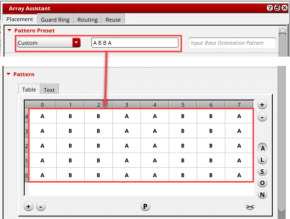
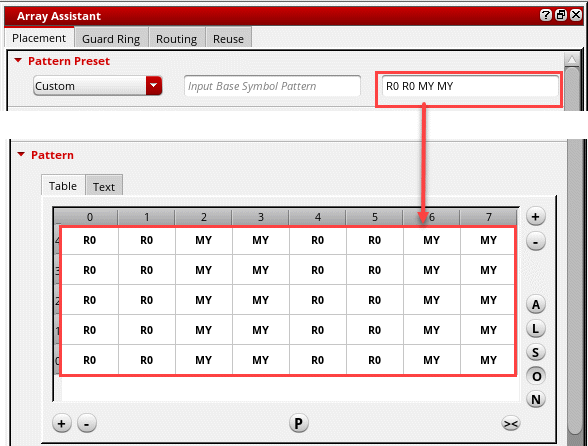
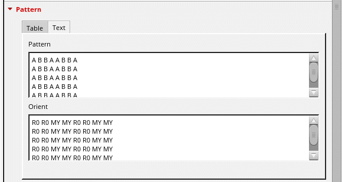
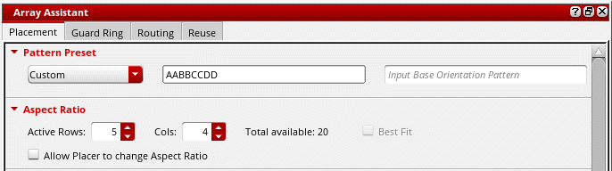

Modgen Placement Settings in the Array Assistant
When you open the Array Assistant, the Placement tab is displayed by default. The initial device placement is defined by the current placement in the target Modgen. Use the options on the Placement tab to refine the placement as per your requirements.
Use one of the following methods to specify a grid pattern:
- (Layout EXL and Higher Tiers) Select a Pattern Preset from the drop-down list.
-
Specify the grid dimensions in the Aspect Ratio section.
If you specify both Active Rows and Cols, then a grid of the specified dimensions is generated. The engine calculates and adjusts the number of columns to accommodate the instances and creates a suitable grid.
Devices that are placed on the grid are automatically interdigitated. -
Specify a base pattern and press
Enter. In Layout EXL and higher tiers, set Pattern Preset to Custom before specifying the base pattern.
You can generate the resulting pattern and modify it, if needed.
Base patterns begin at the lower left corner of the grid and proceed left to right until all rows are filled. For example, if you have two devices with an m-factor of four, and you specify two rows with the base pattern of ABBA, you would create the following interdigitation pattern:A B B A
A B B A
The base pattern does not have to cover an entire row. If, instead, you specified a base pattern of ABB, the resulting pattern would be as follows:BBAB
ABBA
The base pattern supports the following:-
Repetition Factor for Base Pattern: You can specify a repetition factor to repeat a pattern symbol multiple times in the Base Pattern text using the following syntax:
<pattern symbol>:<repetition count>
For example, if you typeA B:8 Cin the Base Pattern text box, then the resultant value is displayed in the following pattern:
A B B B B B B B B C
The repetition factor can also be used in the Base Orientation field. For example, enteringR0 MY:8 R0would result in:
R0 MY MY MY MY MY MY MY MY R0
You can use brackets to specify the repetition factor for a group of devices or orientations. For example,(A B):2 (B A):2would result in:
A B A B B A B A
Similarly,(R0 MY):2 (MX R180):2would result in:
R0 MY R0 MY MX R180 MX R180 -
Repetition Sequences of Pattern Symbols: The pattern notation specifies repeating sequences of pattern symbols. This is useful for more complicated patterns required to generate the device configurations, such as common centroid.
A pattern symbol is a single letter, '*' or '-', which is optionally followed by a number. A pattern sequence contains one or more pattern symbols or pattern expressions concatenated together. You can also use a shorthand notation for filling out the rows of a pattern. If the pattern text has less lines than what is specified in the Rows field of the form, then the lines entered so far are repeated to fill out the remaining rows.
The shorthand notation can only be used if the number of schematic devices in the Modgen are less than or equal to 25. If there are more than 25 schematic devices, Modgens generate symbols with numbers concatenated to them, such asA1orB1to make them unique. Therefore, the syntax for the shorthand repetition factor and the syntax to make unique symbols are ambiguous.
You can still specify a repetition factor if there are more than 25 schematic devices, but it must be delimited with a ':'. For example,a2is interpreted as the pattern symbolA2whereas,a:2is interpreted as the pattern symbolArepeated2times.If you want to generate the pattern for(b2a2)2and(a2b2)2, where a Modgen has4rows, then the following pattern is generated.
B B A A B B A A
A A B B A A B B
B B A A B B A A
A A B B A A B B
-
Repetition Factor for Base Pattern: You can specify a repetition factor to repeat a pattern symbol multiple times in the Base Pattern text using the following syntax:
-
Specify a base orientation in the Base Orientation box and press
Enter. In Layout EXL and higher tiers, set Pattern Preset to Custom before specifying the base orientation.
You can generate the resulting pattern and modify it, if needed. -
Enter a textual pattern for the grid on the Text tab in the Pattern section. Click Apply to generate the pattern in the layout canvas.
Each row in the Pattern box corresponds to the corresponding row in the Modgen. You can use shortcuts to specify the pattern, for example AA, A2 or (A)2 — all indicate two instances of device A. Orient indicates the orientation of devices in each row.
When you select a device instance in the Pattern section, it is highlighted in the layout canvas.
When you modify a Modgen grid, the existing grid member object orientations are overridden when all of the following conditions are met:
-
The regenModgenPostProcess environment variable is set to
t. - The target position of the array results in an overlapping placement rows or row-like placement grids.
- The placement rows or row-like placement grids specify a limited set of orientations for compliance or snapping.
- The current grid member orientation configuration does not result in the most compact array-row-to-placement-row mapping.
The following images show how the placement settings are applied to a Modgen.
Modgen Pattern Presets
(Layout EXL and Higher Tiers) You can specify the pattern in which devices are to be placed in the Modgen. The Pattern Preset list includes the presets listed in the table below. Select the required preset. The output pattern is displayed in the Pattern box.
Pattern presets such as Current, Custom, and Clustered respect the specified rows and columns fields. However, certain pattern presets, for example Compact and Common Centroid, define specific array dimensions, and therefore they do not respect the specified rows and columns.
You can use the following preset generator SKILL functions to control the presets that are displayed in the Preset drop-down list.
- gpeRegisterPresetGen: Registers preset generator functions. Once registered, these functions are displayed in the Preset drop-down list.
- gpeIsRegisteredPresetGen: Checks whether a preset generator function is registered.
- gpeRunPresetGen: Invokes a preset generator function on the active figGroup. The current figGroup is updated according to the preset generator logic.
- gpeIsPresetGenDisplayable: Checks whether a preset generator should be displayed in the Preset drop-down list of the Grid Pattern Editor.
- gpeClearPresetGenerators: Deletes all the registered preset generator functions from the system.
- gpeUnregisterPresetGen: Unregisters the given preset generator function from the Grid Pattern Editor.
Setting the Placement Objective
To specify the placement objective, do the following in the Aspect Ratio section:
-
Specify the number of rows in the Modgen in the Active Rows field.
The number of columns is automatically calculated and displayed in Cols. -
Select Best Fit to ensure that an optimal placement of the Modgen devices is achieved according to the specified pattern.
This option is available only when Pattern Preset is set to Custom (Layout EXL and Higher Tiers) and a base pattern is specified. -
Select Allow Placer to change Aspect Ratio to let the Virtuoso device-level automatic placer adjust the aspect ratio of the Modgen to achieve optimized placement for the given floorplan.

Adding Dummies Around Modgens
(Layout EXL and Higher Tiers) Use the options in the Dummy Control section to add dummies around the Modgen.
- From the Dummy Net list, choose the net to which the pins of the dummies are to be connected.
-
Select a Dummy Type.
This option is available only in certain advanced node flows. - Click Fill Gaps With Dummies to fill gaps between devices with dummies and add dummy columns where there are abutment breaks. Dummies are inserted when you click Apply in the Array Assistant.
-
Specify the number of dummy rows and columns in the Top/Bot and Left/Right fields.
To add surround dummies, specify both Top/Bot and Left/Right values.
Editing the Grid Pattern
You can edit the mapping of instances and dummies to symbols in the Pattern Symbol Mapping table.
You can edit the Modgen devices in the Pattern grid directly or using the options in the shortcut menu.
Saving and Loading Array Settings from a CSV File
The Save/Load CSV section lets you save the current array settings to a comma-separated values (CSV) file. You can also load array settings from a CSV file.
As the name suggests, a CSV file comprises character strings that are separated by commas. A CSV file allows data to be saved in a tabular format.
To save the current array settings to a CSV file:
-
Specify the path to the CSV file in the File Name field.
Alternatively, click the Browse button to open a file browser, where you can select the path from the hierarchy and specify a file name. - Set Pattern View to one of the following:
- Click Save.
The array settings are saved to the specified CSV file.
To load array settings from a CSV file:
The preset is loaded from the specified preset file.
Specifying the Spacing Between Modgens
(Layout EXL and Higher Tiers) Use the options in the Spacing section to specify the spacing between Modgen devices.
- Specify a Horizontal value, which indicates the spacing between Modgens in a row and select a reference layer for calculating the horizontal spacing.
- Specify a Vertical value, which indicates the spacing between Modgens in columns, and select a reference layer for calculating the vertical spacing.
- Select Abut to abut all Modgen devices and dummies to get a compact placement.
- Select Sync Row Abutment to abut all rows in a Modgen in a synchronized operation along a column.
An unselected state for the spacing, alignment, and abut fields implies that if the current Array Assistant settings for these properties are customized (their state is unreachable by the spacing, alignment, or abut the Array Assistant fields), the custom settings remain untouched during an Array Assistant Apply operation.
To customize the Array Assistant spacing, alignment, and abut settings without using these fields, you can load an existing customized Modgen array into the Array Assistant.
Deselecting the spacing, alignment, and abut fields from a selected state always resets these values to their defaults, align left for Horizontal, align bottom for Vertical, and unabut all.
Related Topics
Setting the Placement Objective
Saving and Loading Array Settings from a CSV File
Specifying the Spacing Between Modgens
Display Names in Array Assistant
Return to top